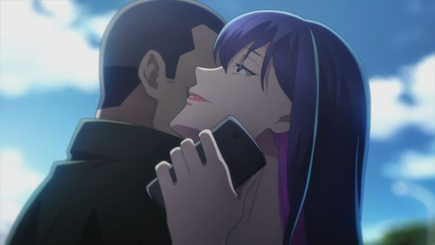

"Babylon" was a 2019 anime that was originally exclusive to Amazon's streaming service, and would be one of the first series to break the "streaming-only" curse to release on home video, courtesy of Sentai Filmworks. I bought a copy on a whim, with some initial research showing it had strong viewer reviews. Seemingly just another gritty police-procedural, it turned out to be a memorable journey, thanks to a strong story and strong direction.To reveal the whole story would be a spoiler, and some of the dramatic revelations core to the plot aren't given until a few episodes in. It's set in a fictional metropolis called Shiniki, a Tokyo of the future, built to have its own rules and regulations. Zen Seizaki is a mid-aged public prosecutor, working with a young rookie on a fairly boring assignment involving a medical company committing fraud in the first episode. But as they investigate, things appear darker and more complex than it first appeared. A key individual is found dead from an apparent suicide in his home. Politicians are seen going into a hotel alone with a woman half their age. A mayoral election might be rigged when opposing candidates are found to be working together behind the scenes. A company document is found covered in blood and skin tissue. And after tailing people of interest, even the investigation team itself isn't immune from being killed to stay quiet.In a growing web of politics, sex and murder, the grand scope of things is that Shiniki was built to test things that couldn't be possible elsewhere in the country, or the world. This includes laws, and even drug testing without the red tape of safety regulations. Possibly, even the legalization of suicide. This is a widely known secret among the top elite, and considered to be the right thing, an example that the rest of the world might one day adopt. In the case of medical advancement, that might be plausible, but suicde? And if its a known secret, why kill anyone in the process to hide it? At the center of it all seems to be a mysterious woman of many identities that doesn't belong to anyone's side. Zen is pushed in a case that increasingly grows personal, as his morals and duty to his definition of justice are tested.It's a captivating thriller that does a good job hiding itself at first. The first episode really seems dry and mundane, until some of these pieces of gruesome evidence start appearing. But even after the plot is fully revealed, the show remains dry... perhaps too dry, to the point where the viewer might sometimes nod off, only to jolt back a couple times per episode whe something exciting happens. It's hard to make a grounded show of mystery and intrigue interesting without much action in the forefront. This is a show where you have to pay attention and force yourself to listen to every conversation and remember every Japanese name that's thrown out. It's all par for the genre, and with all the more tantilizing aspects to the plot, attentitive viewers are well-rewarded with a strong story. Keep in mind that suicide is key to the plot, and Sentai even goes so far as to include a prevention-hotline message in every episode. In fact, the show increasingly becomes a platform to discuss the ethics of whether suicide is acceptable, wrapped in this police-thriller package. If you find yourself bored talking about philosophy, you'll be disappointed with where the series goes. And naturally, if suicide is a sensitive topic for you, it's best to avoid "Babylon" for your personal health. Aside from that, the show isn't afraid to revel is some unsettling scenes. "Babylon" is far darker than I expected, and while it uses such scenes sparringly, that makes the appearance of some even more sinister. I was not prepared for Epsiode 7. In fact, I was almost prepared to exit the series there, and scared to go back. The ending of "Babylon" appears to have disappointed some people. The anime isn't much different from the ending of the original novels by Mado Nozaki, except for a minor but significant improvement. While it leaves a few threads open, I was still impressed by the ending and personally applauded it. Again, I think most people were really just frustrated that so much of the later episodes were about philosophy, when my personal arguements for and against suicide are so much simpler and shorter then what the anime tries to explain. Even still, I liked that academic perspective, which seems to be a common theme for the writer's work, that of asking "big life questions" without universal answers. Speaking of watching people talk; Kiyotaka Suzuki did a great job directing the series. Key conversations are directed with extra flair, overlaying shots and experimenting with different aspect ratios and styles. Some episodes are framed with flashbacks, starting with a conclusion before going back a few days to explain it. It's a great effect, and helps make the show more engaging to watch.Those creative choices also hide some of the production quality. "Babylon" was made by a relatively new studio (Revoroot), and most of the time, it looks modern and clean, but lacks detail and much animated movement. With grounded, realistic characters, designs don't stand out all that much. It's only during those more ambitious scenes that the studio seems to bother putting much effort into the show. Music is sharp, a good synergy of sounding smart and methodical while also pumping with emotion. The Engish dub is sometimes a mixed bag with some awkward translation and off performances from side characters, but the lead characters are very well acted, enough to pull up the dub as strong in general. "Babylon" is a perfect example of a mature late-night political thriller that I'd be hooked into watching every week. It's a mystery as to why such a show was restricted to an all-at-once streaming service for its debut... although the story's subject matter and dark path might explain it. Even when it got too dark for me, it provides a lot to think about.
- "Ani" More reviews can be found at : https://2danicritic.github.io/ Previous review: review_Azumanga_Daioh Next review: review_Baccano!